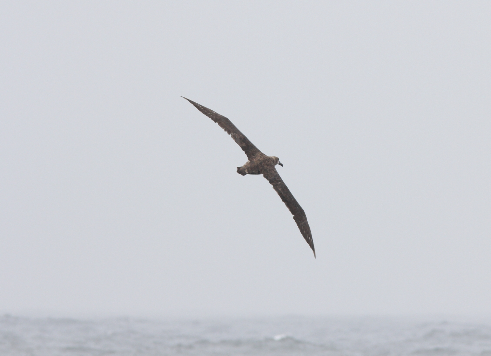
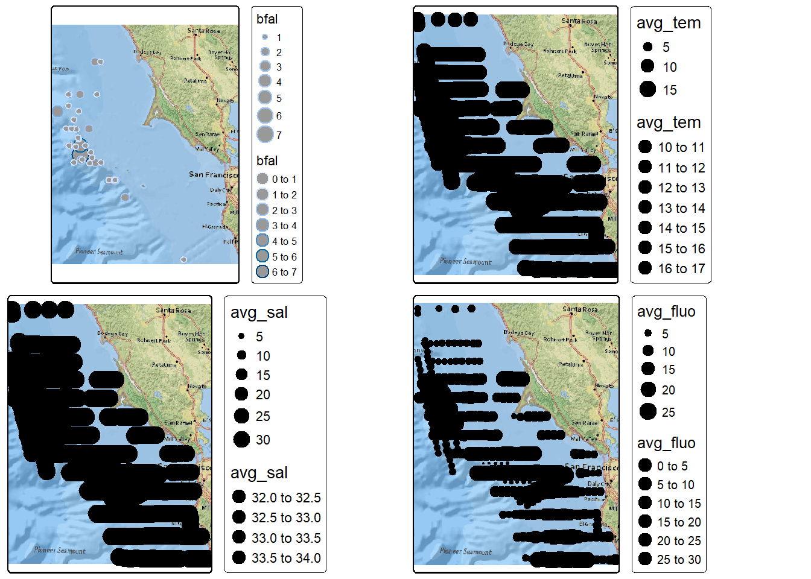
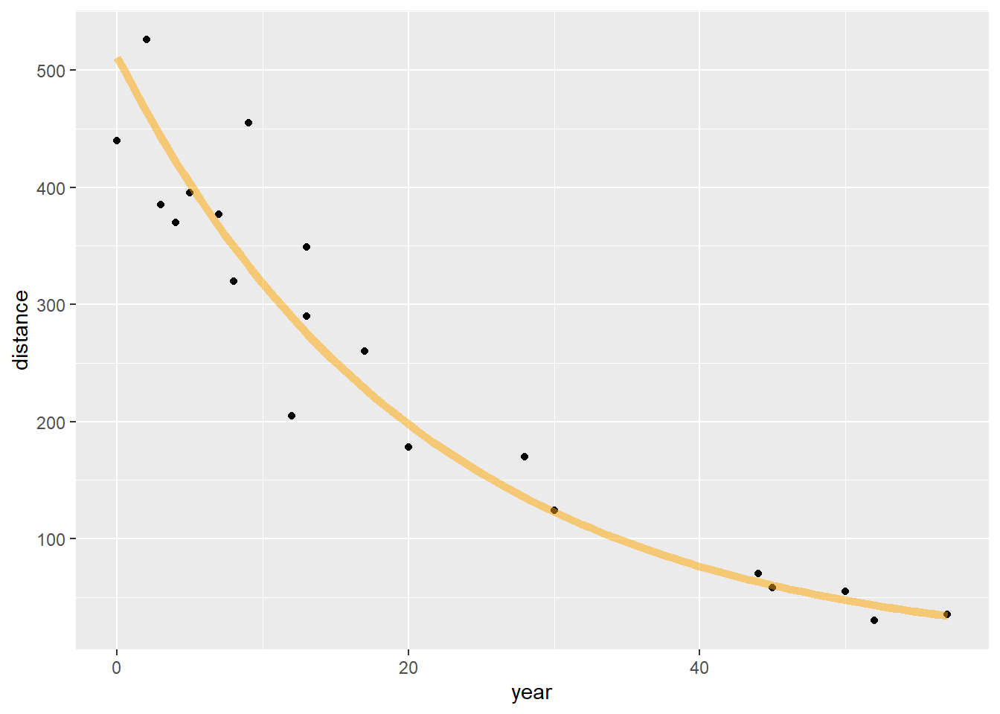
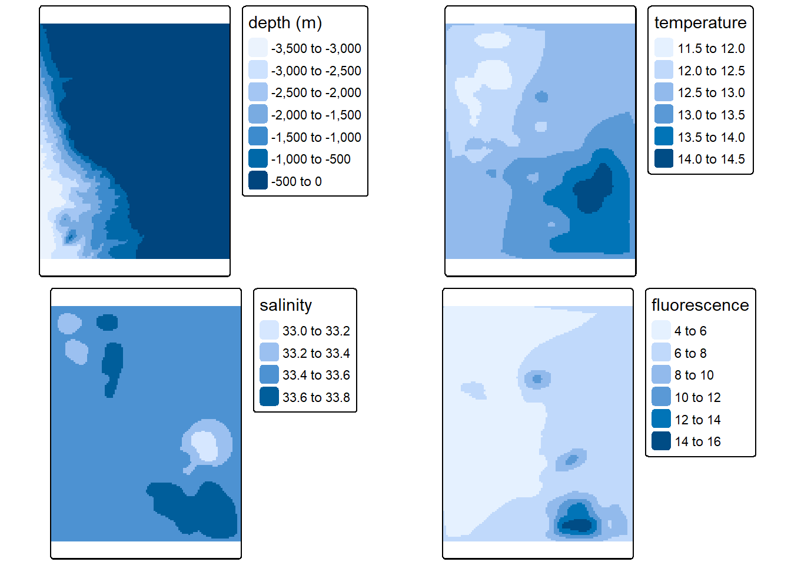
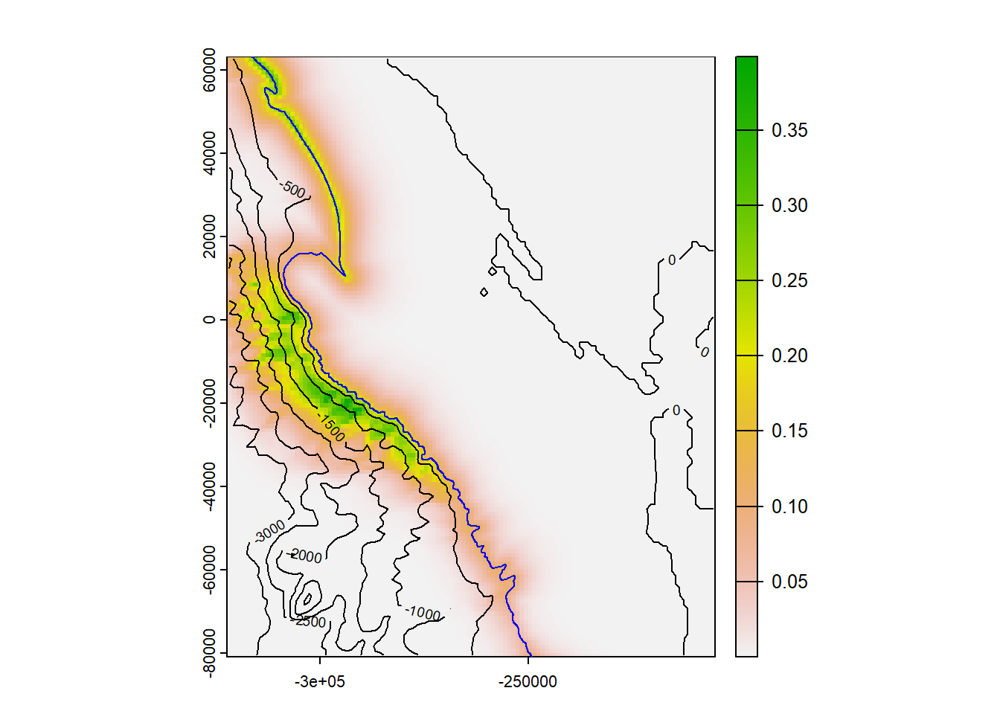

6 Seabird Model
In this case study, we’ll expand upon a poisson family glm applied to seabird counts discussed in the modeling chapter. The Applied California Current Ecosystem Study (ACCESS) https://farallones.noaa.gov/science/access.html supports marine wildlife conservation in northern and central California, including the Greater Farallones off the Golden Gate and San Francisco (Applied California Current Ecosystem Studies (n.d.), Studwell et al. (2017)).

FIGURE 6.1: By Caleb Putnam - Black-footed Albatross, 20 miles offshore of Newport, OR, 16 July 2013, CC BY-SA 2.0, https://commons.wikimedia.org/w/index.php?curid=74693160
library(igisci); library(sf); library(tidyverse); library(tmap)
library(maptiles); library(readxl); library(DT)
Sanctuaries <- st_read(ex("SFmarine/Sanctuaries.shp"))
transectsXLS <- read_xls(ex("SFmarine/TransectsData.xls"))
transects <- st_transform(st_as_sf(transectsXLS, coords=c("midlon","midlat"), crs=4326), crs=st_crs(Sanctuaries))
cordell_bank <- st_read(ex("SFmarine/cordell_bank.shp"))
isobath_200 <- st_read(ex("SFmarine/isobath_200.shp"))
mainland <- st_read(ex("SFmarine/mainland.shp"))
sefi <- st_read(ex("SFmarine/sefi.shp"))library(tmap); library(maptiles)
tmap_mode("plot")
oceanBase <- get_tiles(transects, provider="Esri.NatGeoWorldMap")
transJul <- transects %>% filter(month==7)
transJulnonegTS <- transJul %>% filter(avg_tem>0 & avg_sal>0)
transJulnonegTSF <- transJulnonegTS %>% filter(avg_fluo>0)
Jul_bfal <- tm_shape(oceanBase) + tm_rgb() +
tm_shape(transJul) + tm_symbols(col="bfal", size="bfal")
Jul_all <- tm_shape(oceanBase) + tm_rgb() +
tm_shape(transJul) + tm_dots(col="avg_fluo", size="avg_fluo")
Jul_TS <- tm_shape(oceanBase) + tm_rgb() +
tm_shape(transJulnonegTS) + tm_dots(col="avg_fluo", size="avg_fluo")
Jul_TSF <- tm_shape(oceanBase) + tm_rgb() +
tm_shape(transJulnonegTSF) + tm_dots(col="avg_fluo", size="avg_fluo")
tmap_arrange(Jul_bfal, Jul_all, Jul_TS, Jul_TSF)The transects data have 45 variables including:
- date and time variables
- seawater measurements of temperature, salinity and fluorescence
- ocean climate indices
- distance to land, islands, the 200m isobath, and Cordell Bank
- depth
- oceanic/atmospheric conditions (sea state, visibility, beaufort index, cloudiness, upwelling)
- counts of seabirds:
- black-footed albatross (bfal)
- northern fulmar (nofu)
- pink-footed shearwater (pfsh)
- red phalarope (reph)
- red-necked phalarope (rnph)
- sooty shearwater (sosh)
More specifics are in the metadata:
transects_metadata <- read_excel(ex("SFmarine/Transects_Metadata.xls"))
DT::datatable(transects_metadata[1,1])DT::datatable(read_excel(ex("SFmarine/Transects_Metadata.xls"),skip=3))6.1 Goals and basic methods of the analysis
Our general goal, inspired by Studwell et al. (2017), is to look at what variables influence the counts of specific seabirds and develop predictive models and maps illustrating optimal conditions for those seabirds based on the model. We’re expecting that some of the various measurements and conditions could be good predictors, though recognizing that no model is perfect and there are going to be many other factors we can’t account for.
Our basic method will include:
- Gathering data collected on the cruises as well as GIS and model-derived measurements (e.g. depth, distance, climate models). This has been done and all variables we’ll use are included in the transects shapefile.
- Explore the data using maps, graphs and tables, filtering for a time frame and complete data.
- Select a species, timeframe, and selection of explanatory variables.
- Use
glmto model the species counts responding to the explanatory variables, using the poisson family. - Map the results.
6.2 Exploratory data analysis
We’ll start by looking at a summary of the bird counts, stored as a series of variables from bfal (black-footed albatross) to sosh (sooty shearwater):
transectBirdcounts <- transects %>%
dplyr::select(bfal:sosh)
summary(transectBirdcounts)## bfal nofu pfsh reph
## Min. : 0.0000 Min. : 0.0000 Min. : 0.0000 Min. : 0.0000
## 1st Qu.: 0.0000 1st Qu.: 0.0000 1st Qu.: 0.0000 1st Qu.: 0.0000
## Median : 0.0000 Median : 0.0000 Median : 0.0000 Median : 0.0000
## Mean : 0.1169 Mean : 0.2001 Mean : 0.1883 Mean : 0.1638
## 3rd Qu.: 0.0000 3rd Qu.: 0.0000 3rd Qu.: 0.0000 3rd Qu.: 0.0000
## Max. :20.0000 Max. :109.0000 Max. :50.0000 Max. :70.0000
## rnph sosh geometry
## Min. : 0.0000 Min. : 0.000 POINT :4073
## 1st Qu.: 0.0000 1st Qu.: 0.000 epsg:6414 : 0
## Median : 0.0000 Median : 0.000 +proj=aea ...: 0
## Mean : 0.3351 Mean : 5.737
## 3rd Qu.: 0.0000 3rd Qu.: 0.000
## Max. :86.0000 Max. :1405.000We’ll use the July data from multiple years (in the modeling chapter we just looked at July 2006) to visualize the spatial patterns of black-footed albatross, which we can see from the above has the lowest counts, displayed in both color and size in order to better see the larger counts. We’ll make similar maps of measurements of temperature, salinity and fluorescence from the transect cruises. Note that records with values of zero for any of these 3 measures are excluded, since these represent non-measurements.
tmap_mode("plot")
oceanBase <- get_tiles(transects, provider="Esri.NatGeoWorldMap")
transJul <- transects %>% filter(month==7 & !is.na(avg_tem) & !is.na(avg_sal) & !is.na(avg_fluo))
Jul_bfal <- tm_shape(oceanBase) + tm_rgb() +
tm_shape(transJul) + tm_symbols(col="bfal", size="bfal")
Jul_tem <- tm_shape(oceanBase) + tm_rgb() +
tm_shape(transJul) + tm_dots(col="avg_tem", size="avg_tem")
Jul_sal <- tm_shape(oceanBase) + tm_rgb() +
tm_shape(transJul) + tm_dots(col="avg_sal", size="avg_sal")
Jul_fluo <- tm_shape(oceanBase) + tm_rgb() +
tm_shape(transJul) + tm_dots(col="avg_fluo", size="avg_fluo")
tmap_arrange(Jul_bfal, Jul_tem, Jul_sal, Jul_fluo)
FIGURE 6.2: July black footed albatross, temperature, salinity, fluorescence
6.2.1 Identifying the appropriate model using variance and mean comparisons
The poisson model uses an assumption that the mean and variance of the response variable is equal, but a quick check shows that this is not really met, and that since the variance is greater than the mean, our data may be overdispersed, which in practice is very common.
mean(transJul$bfal)## [1] 0.08034611var(transJul$bfal)## [1] 0.19031876.3 Model black-footed albatross counts for July using a poisson-family glm
Prior studies have suggested that temperature, salinity, fluorescence, depth and various distances might be good explanatory variables to use to look at spatial patterns, so we’ll use these in the model. (Variables such as climate and oceanic conditions such as upwelling might be used in a temporal analysis, but are constant for this July analysis where we’re modeling variables with spatial patterns.)
summary(glm(bfal~avg_tem+avg_sal+avg_fluo+avg_dep+dist_land+dist_isla+dist_200m+dist_cord+year, data=transJul,family=poisson))##
## Call:
## glm(formula = bfal ~ avg_tem + avg_sal + avg_fluo + avg_dep +
## dist_land + dist_isla + dist_200m + dist_cord + year, family = poisson,
## data = transJul)
##
## Deviance Residuals:
## Min 1Q Median 3Q Max
## -1.2692 -0.4233 -0.1760 -0.0382 5.5544
##
## Coefficients:
## Estimate Std. Error z value Pr(>|z|)
## (Intercept) -6.335e+02 1.955e+02 -3.241 0.00119 **
## avg_tem 1.834e-01 1.217e-01 1.506 0.13199
## avg_sal 1.893e+00 7.643e-01 2.476 0.01327 *
## avg_fluo -1.803e-01 6.458e-02 -2.792 0.00524 **
## avg_dep -2.469e-03 5.085e-04 -4.854 1.21e-06 ***
## dist_land -7.343e-05 3.436e-05 -2.137 0.03261 *
## dist_isla 8.140e-06 1.129e-05 0.721 0.47107
## dist_200m -3.444e-04 6.478e-05 -5.317 1.05e-07 ***
## dist_cord -5.801e-06 9.461e-06 -0.613 0.53975
## year 2.836e-01 9.088e-02 3.121 0.00180 **
## ---
## Signif. codes: 0 '***' 0.001 '**' 0.01 '*' 0.05 '.' 0.1 ' ' 1
##
## (Dispersion parameter for poisson family taken to be 1)
##
## Null deviance: 412.03 on 808 degrees of freedom
## Residual deviance: 295.41 on 799 degrees of freedom
## AIC: 408.82
##
## Number of Fisher Scoring iterations: 8We can see in the model coefficients table several predictive variables that appear to be significant:
- avg_sal
- avg_fluo
- avg_dep
- dist_land
- dist_200m
- year
So in the interest of parsimony, we’ll remove non-significant variables to create a new model:
bfal_poisson <- glm(bfal~avg_sal+avg_fluo+avg_dep+dist_land+dist_200m+year, data=transJul,family=poisson)
summary(bfal_poisson)##
## Call:
## glm(formula = bfal ~ avg_sal + avg_fluo + avg_dep + dist_land +
## dist_200m + year, family = poisson, data = transJul)
##
## Deviance Residuals:
## Min 1Q Median 3Q Max
## -1.1781 -0.4238 -0.1848 -0.0421 5.5779
##
## Coefficients:
## Estimate Std. Error z value Pr(>|z|)
## (Intercept) -5.029e+02 1.696e+02 -2.965 0.00303 **
## avg_sal 1.360e+00 6.582e-01 2.066 0.03884 *
## avg_fluo -1.623e-01 6.147e-02 -2.640 0.00828 **
## avg_dep -2.318e-03 4.833e-04 -4.796 1.62e-06 ***
## dist_land -5.793e-05 3.228e-05 -1.795 0.07269 .
## dist_200m -3.266e-04 6.200e-05 -5.268 1.38e-07 ***
## year 2.283e-01 8.047e-02 2.838 0.00455 **
## ---
## Signif. codes: 0 '***' 0.001 '**' 0.01 '*' 0.05 '.' 0.1 ' ' 1
##
## (Dispersion parameter for poisson family taken to be 1)
##
## Null deviance: 412.03 on 808 degrees of freedom
## Residual deviance: 298.70 on 802 degrees of freedom
## AIC: 406.11
##
## Number of Fisher Scoring iterations: 7So from this we should be able to predict the spatial distribution of counts using the formula for the poisson glm model, which in our case will have 5 explanatory variables avg_sal (\(X_1\)), avg_fluo (\(X_2\)), avg_dep (\(X_3\)), dist_land (\(X_4\)), dist_200m (\(X_5\)), and year ($X_6), using the coefficient estimates from the summary above and the prediction formula in the form:
\[z = e^{b_0+b_1X_1+b_2X_2+b_3X_3+b_4X_4+b_5X_5+b_6X_6}\]
6.3.1 Map the prediction
To create a map of the predicted spatial pattern, we’ll need rasters for each of the variables. We’ll need to create these in various ways:
- Depth raster from bathymetry data source
- Derive distance rasters from the mainland and 200 m isobar features
- For measurements obtained on the transect cruises like those from the CTD sensor (salinity and temperature), we’ll need to interpolate a raster from those points
6.3.1.1 Depth and distance rasters
We have a depth raster at 200-m resolution, but for our purposes and at this scale we only need 1000-m (1-km) resolution. We’ll create a 1-km template raster based on a 10 km buffer around data points, and use that to resample the distances and along with mainland and 200-m isobath, derive the distance rasters needed:
library(terra)
bathy <- project(rast(ex("SFmarine/bd200m_v2i.tif")),crs(transects))AOI <- vect(st_union(st_buffer(transJul, 10000)))
rasAOI <- rast(AOI, res=1000)
bathy1km <- terra::resample(bathy,rasAOI)
distland <- terra::distance(rasAOI, vect(mainland))##
|---------|---------|---------|---------|
=========================================
names(distland) <- "distLand"
distisobath200 <- terra::distance(rasAOI, vect(isobath_200))##
|---------|---------|---------|---------|
=========================================
names(distisobath200) <- "dist200mD"tm_dep <- tm_shape(bathy1km) + tm_raster(title="depth (m)")
tm_distland <- tm_shape(distland) + tm_raster(title="Dist to land (m)")
tm_distisobath200 <- tm_shape(distisobath200) + tm_raster(title="Dist to 200m isobath")
tmap_arrange(tm_dep, tm_distland, tm_distisobath200)
6.4 Interpolation
We’ll use gstat with an inverse distance weighted (IDW) method applying a inverse distance power of 2 for temperature, salinity and fluorescence, for each year 2004:2013, then average the 10.
library(gstat)
transJulv <- vect(transJul)
d <- data.frame(geom(transJulv)[,c("x", "y")], as.data.frame(transJulv))
# d is a data.frame with x and y variables from the geom
# Temperature
for (year in 2004:2013) {
gs <- gstat(formula=avg_tem~1, locations=~x+y, data=d, set=list(idp=2))
temRas <- interpolate(rasAOI, gs)$var1.pred
if (year == 2004) temSum <- temRas
if (year > 2004) temSum <- temSum + temRas
}
temMean <- temSum/10; fillval <- global(temMean, "mean")[,1]
tem <- focal(temMean,9, "mean", fillvalue=fillval)
names(tem) <- "temperature"
# Salinity
for (year in 2004:2013) {
gs <- gstat(formula=avg_sal~1, locations=~x+y, data=d, set=list(idp=2))
salRas <- interpolate(rasAOI, gs)$var1.pred
if (year == 2004) salSum <- salRas
if (year > 2004) salSum <- salSum + salRas
#print(paste(paste(year, "salSum", global(salSum, "max")[,1])))
}
salMean <- salSum/10; fillval <- global(salMean, "mean")[,1]
sal <- focal(salMean,9, "mean", fillvalue=fillval) # generalizes the IDW to reduce sample point artifacts
names(sal) <- "salinity"
# Fluorescence
for (year in 2004:2013) {
gs <- gstat(formula=avg_fluo~1, locations=~x+y, data=d, set=list(idp=2))
fluoRas <- interpolate(rasAOI, gs)$var1.pred
if (year == 2004) fluoSum <- fluoRas
if (year > 2004) fluoSum <- fluoSum + fluoRas
}
fluoMean <- fluoSum/10; fillval <- global(fluoMean, "mean")[,1]
fluo <- focal(fluoMean,9, "mean", fillvalue=fillval) # generalizes the IDW to reduce sample point artifacts
names(fluo) <- "fluorescence"tm_tem <- tm_shape(tem) + tm_raster(title="temperature")
tm_sal <- tm_shape(sal) + tm_raster(title="salinity")
tm_fluo <- tm_shape(fluo) + tm_raster(title="fluorescence")
tmap_arrange(tm_dep, tm_tem, tm_sal, tm_fluo)
FIGURE 6.3: Interpolated depth, salinity and fluorescence, mean of July samples in years 2004:2011
Reviewing the results of the glm…
##
## Call:
## glm(formula = bfal ~ avg_sal + avg_fluo + avg_dep + dist_land +
## dist_200m + year, family = poisson, data = transJul)
##
## Deviance Residuals:
## Min 1Q Median 3Q Max
## -1.1781 -0.4238 -0.1848 -0.0421 5.5779
##
## Coefficients:
## Estimate Std. Error z value Pr(>|z|)
## (Intercept) -5.029e+02 1.696e+02 -2.965 0.00303 **
## avg_sal 1.360e+00 6.582e-01 2.066 0.03884 *
## avg_fluo -1.623e-01 6.147e-02 -2.640 0.00828 **
## avg_dep -2.318e-03 4.833e-04 -4.796 1.62e-06 ***
## dist_land -5.793e-05 3.228e-05 -1.795 0.07269 .
## dist_200m -3.266e-04 6.200e-05 -5.268 1.38e-07 ***
## year 2.283e-01 8.047e-02 2.838 0.00455 **
## ---
## Signif. codes: 0 '***' 0.001 '**' 0.01 '*' 0.05 '.' 0.1 ' ' 1
##
## (Dispersion parameter for poisson family taken to be 1)
##
## Null deviance: 412.03 on 808 degrees of freedom
## Residual deviance: 298.70 on 802 degrees of freedom
## AIC: 406.11
##
## Number of Fisher Scoring iterations: 7… we can set up and apply the prediction formula to these rasters, using year 2006.
b <- coefficients(bfal_poisson)
bfalpred <- exp(b[1] + b[2]*sal + b[3]*fluo + b[4]*bathy1km + b[5]*distland + b[6]*distisobath200 + b[7]*2006)
names(bfalpred) = "bfal_predict"
plot(bfalpred)
lines(vect(isobath_200), add=T, col="blue")
contour(bathy1km, add=T)
FIGURE 6.4: Black-footed albatross prediction, July 2006
It appears that a prominent influence on the resulting spatial pattern is distance to the 200-m isobath, with details provided by the other explanatory variables. Given that the year is a constant in the spatial domain, the pattern on the prediction map does not vary, but the range of counts predicted varies, and we can predict the maximum value with:
cat("Maximum black-footed albatross model count predictions, 2004:2013\n")## Maximum black-footed albatross model count predictions, 2004:2013for (i in 2004:2013) {
maxprd <- global(exp(b[1] + b[2]*salRas + b[3]*fluoRas + b[4]*bathy1km + b[5]*distland + b[6]*distisobath200 + b[7]*i),max)
cat(as.character(i), " ", as.character(format(maxprd, digits=3)), "\n")
}## 2004 0.305
## 2005 0.383
## 2006 0.481
## 2007 0.604
## 2008 0.759
## 2009 0.954
## 2010 1.2
## 2011 1.51
## 2012 1.89
## 2013 2.38